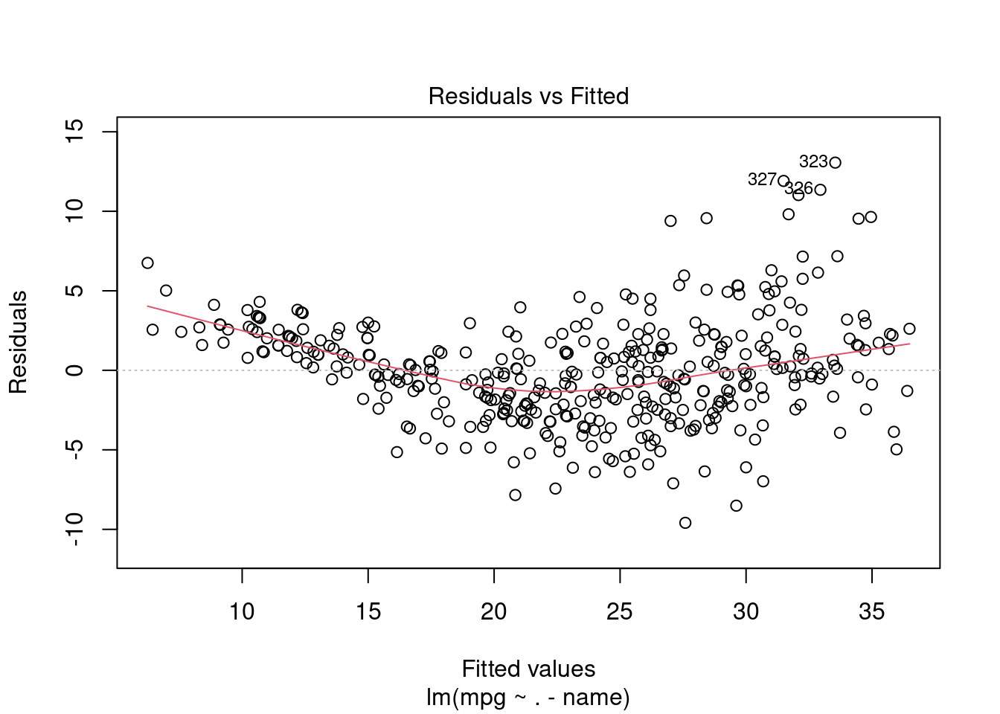
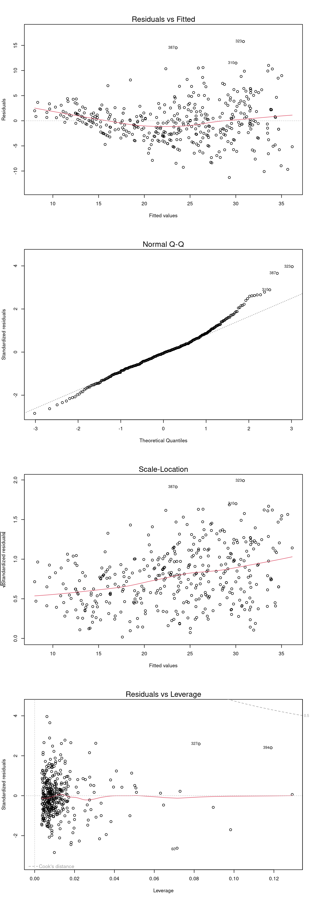
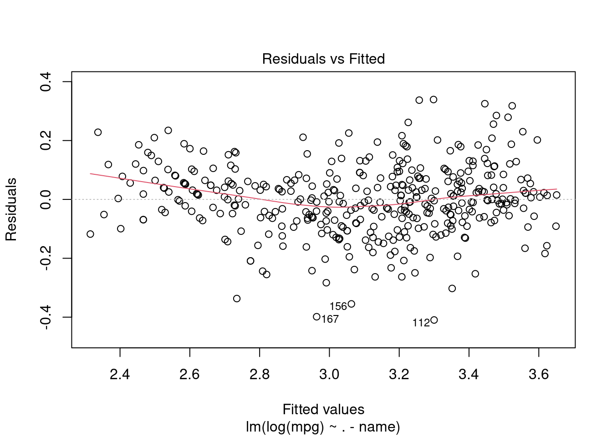

GPA <- 4
IQ <- 110
Gender <- 1 # female = 1
## Prediction
Y_hat <- 50 + 20*GPA + 0.07*IQ + 35*Gender + 0.01*GPA*IQ - 10*GPA
Y_hat[1] 137.11 a) Describe the null hypotheses to which the \(p\)-values given in Table 3.4 correspond.

1 b) Explain what conclusions you can draw based on these \(p\)-values. Your explanation should be phrased in terms of sales, TV, radio, and newspaper, rather than in terms of the coefficients of the linear model.
Answers:
1 a) In Table 3.4, the null hypothesis for TV is that in the presence of radio ads and newspaper ads, TV ads have no effect on sales. Similarly, the null hypothesis for radio is that in the presence of TV ads and newspaper ads, radio ads have no effect on sales.
1 b) On the one hand, the low p-values of TV and radio allow us to reject the “no effect” null hypotheses for TV and radio. Hence, we believe that TV (radio) ads have an effect on sales in the presence of radio (TV) and newspaper ads.
On the other hand, the high p-value of newspaper does not allow us to reject the “no effect” null-hypothesis. This constitutes an inconclusive result and only says that the possible effects of newspaper ads are not large enough to stand out from the estimation errors.
Remember: An insignificant hypothesis test result is never informative about whether the tested null hypothesis is true. We do not have an error-control for falsely accepting the null-hypothesis. We only have an error-control (by the significance level) for falsely rejecting the null-hypothesis.
Carefully explain the main difference between the KNN classifier and KNN regression methods.
Answer:
KNN classifier and KNN regression methods are closely related in formula. However, the final result of KNN classifier is the classification output for \(Y\) (qualitative), given a certain predictor \(x_0\), where as the output for a KNN regression predicts the quantitative value for \(f(x_0)\), given a certain predictor \(x_0\).
Suppose we have a data set with five predictors:
\(X_1 =GPA\)
\(X_2 = IQ\)
\(X_3 = Gender\) (\(1\) for Female and \(0\) for Male)
\(X_4 =\) Interaction between \(GPA\) and \(IQ\)
\(X_5 =\) Interaction between \(GPA\) and \(Gender\)
The response variable (in thousands of dollars) is defined as:
\(Y =\) starting salary after graduation
Suppose we use least squares to fit the model, and get:
\(\hat{\beta}_0 = 50\), \(\hat{\beta}_1 = 20\), \(\hat{\beta}_2 = 0.07\), \(\hat{\beta}_3 = 35\), \(\hat{\beta}_4 = 0.01\), and \(\hat{\beta}_5 = −10\).
Thus we have:
\[ \begin{align*} &E[Y|X] = \\ & 50 + 20\,\overbrace{GPA}^{X_1} + 0.07\,\overbrace{IQ}^{X_2} + 35\,\overbrace{Gender}^{X_3} + 0.01\,\overbrace{GPA\cdot IQ}^{X_4=X_1\cdot X_2} - 10\,\overbrace{GPA\cdot Gender}^{X_5=X_1\cdot X_3} \end{align*} \]
3 a) Which answer is correct, and why?
Answer: Observe that: \[ \begin{align*} \text{Male\; $(X_3 = 0)$:}\quad & 50 + 20 X_1 + 0.07 X_2 + \phantom{3}0 + 0.01\,(X_1 \cdot X_2) -0 \\[1.5ex] \text{Female\; $(X_3 = 1)$:}\quad & 50 + 20 X_1 + 0.07 X_2 + 35 + 0.01(X_1 \cdot X_2) - 10\,X_1 \end{align*} \]
Thus 3 a) iii. is correct, since once the \(X_1=\)GPA is high enough (\(35-10\,X_1<0 \Leftrightarrow X_1>3.5\)), males earn more on average.
3 b) Predict the salary of a female with IQ of 110 and a GPA of 4.0.
Answer:
GPA <- 4
IQ <- 110
Gender <- 1 # female = 1
## Prediction
Y_hat <- 50 + 20*GPA + 0.07*IQ + 35*Gender + 0.01*GPA*IQ - 10*GPA
Y_hat[1] 137.13 c) True or false: Since the coefficient for the GPA\(\times\)IQ interaction term is very small, there is very little evidence of an interaction effect. Justify your answer.
Answer:
False. We must examine the \(p\)-value (or the \(t\)-statistic) of the regression coefficient to determine if the interaction term is statistically significant or not.
This question involves the use of simple linear regression on the Auto data set.
8 a) Use the lm() function to perform a simple linear regression with mpg as the response and horsepower as the predictor. Use the summary() function to print the results.
library("ISLR2")
data("Auto")
# Perform linear regression
lmObj_1 <- lm(mpg ~ horsepower, data=Auto)
# Use summary function to print the results
summary(lmObj_1)
Call:
lm(formula = mpg ~ horsepower, data = Auto)
Residuals:
Min 1Q Median 3Q Max
-13.5710 -3.2592 -0.3435 2.7630 16.9240
Coefficients:
Estimate Std. Error t value Pr(>|t|)
(Intercept) 39.935861 0.717499 55.66 <2e-16 ***
horsepower -0.157845 0.006446 -24.49 <2e-16 ***
---
Signif. codes: 0 '***' 0.001 '**' 0.01 '*' 0.05 '.' 0.1 ' ' 1
Residual standard error: 4.906 on 390 degrees of freedom
Multiple R-squared: 0.6059, Adjusted R-squared: 0.6049
F-statistic: 599.7 on 1 and 390 DF, p-value: < 2.2e-16Comment on the output. For example:
i) Is there a relationship between the predictor and the response?
Answer:
Yes, there is. The predictor horsepower has a statistically significant (\(p<0.001\)) linear relationship with the response.
ii) How strong is the relationship between the predictor and the response?
Answer:
Statistical significance does not necessarily mean a practically strong or important relationship.
To quantify the strength of the relationship between the predictor and the response, we can look at the following quantities:
The Residual Standard Error (RSE) of the regression model with intercept and horsepower as predictors is given by:
## RSE of lm(mpg ~ horsepower):
RSS <- sum(resid(lmObj_1)^2)
n <- length(resid(lmObj_1))
RSE <- sqrt(RSS/(n-2))
round(RSE, 3)[1] 4.906## Alternatively:
round(summary(lmObj_1)$sigma, 3)[1] 4.906This RSE value is considerable smaller than the RSE of a model with only an intercept:
lmObj_onlyIntercept <- lm(mpg ~ +1, data = Auto)
RSS_onlyIntercept <- sum(resid(lmObj_onlyIntercept)^2)
n <- length(resid(lmObj_onlyIntercept))
RSE_onlyIntercept <- sqrt(RSS_onlyIntercept/(n-1))
round(RSE_onlyIntercept, 3)[1] 7.805Thus, the larger model with horsepower included explains more of the variances in the response variable mpg. Including horsepower as a predictor reduces the RSE by ((RSE_onlyIntercept - RSE)/RSE_onlyIntercept)*100 %; i.e. by 37.15%.
The \(R^2\) value:
round(summary(lmObj_1)$r.squared, 2)[1] 0.61shows that \(60\%\) of variability in \(Y\) can be explained using an intercept and horsepower as predictors.
The value of the \(F\) statistic
round(summary(lmObj_1)$fstatistic, 2) value numdf dendf
599.72 1.00 390.00 is much larger than \(1\) which means that the linear regression model with intercept and horsepower fits the data significantly better than the trivial regression model with only an intercept.
iii) Is the relationship between the predictor and the response positive or negative?
Answer:
The relationship is negative, as we can see from the parameter estimate for horsepower
coef(lmObj_1)[2]horsepower
-0.1578447 iv) What is the predicted mpg associated with a horsepower of \(98\)? What are the associated \(95\%\) confidence and prediction intervals?
Answer:
The predicted value plus confidence interval:
# Horsepower of 98
new_df <- data.frame(horsepower = 98)
# confidence interval
predict(object = lmObj_1, newdata = new_df, interval = "confidence") fit lwr upr
1 24.46708 23.97308 24.96108The predicted value plus prediction interval:
# Horsepower of 98
new_df <- data.frame(horsepower = 98)
# prediction interval
predict(object = lmObj_1, newdata = new_df, interval = "prediction") fit lwr upr
1 24.46708 14.8094 34.124768 b) Plot the response and the predictor. Use the abline() function to display the least squares regression line.
Answer:
plot(x = Auto$horsepower, y = Auto$mpg, ylab = "MPG", xlab = "Horsepower")
abline(lmObj_1, col="blue")
legend("topright",
legend = c("(y,x)", expression(paste("(",hat(y),",x)"))),
pch=c(1,NA), lty=c(NA,1), col=c("black", "blue"))
8 c) Use the plot() function to produce diagnostic plots of the least squares regression fit. Comment on any problems you see with the fit.
Answer:
par(mfrow=c(2,2))
plot(lmObj_1, col='blue')
Looking at the smoothing line of the residuals (\(e_i=y_i−\hat{y}_i\)) vs. the fitted values (\(\hat{y}_i\)), there is a strong pattern in the residuals, indicating non-linearity. You can see evidence of this also in the scatter plot in the answer for question 8 b).
There also appears to be non-constant variance in the error terms (heteroscedasticity), but this may be corrected to an extent when trying a quadratic fit. If not, transformations such as \(log(y)\) or \(\sqrt{y}\) can shrink larger responses by a greater amount and reduce this issue.
There are some observations with large standardized residuals & high leverage (hence, high Cook’s Distance) that we need to review.
This question involves the use of multiple linear regression on the Auto data set.
9 a) Produce a scatterplot matrix which includes all of the variables in the data set.
Answer:
library("ISLR2")
data("Auto")
# Produce scatterplot matrix
pairs(Auto)
9 b) Compute the matrix of correlations between the variables using the function cor(). You will need to exclude the name variable, which is qualitative.
Answer:
round(cor(subset(Auto, select = -name)), 1) mpg cylinders displacement horsepower weight acceleration year
mpg 1.0 -0.8 -0.8 -0.8 -0.8 0.4 0.6
cylinders -0.8 1.0 1.0 0.8 0.9 -0.5 -0.3
displacement -0.8 1.0 1.0 0.9 0.9 -0.5 -0.4
horsepower -0.8 0.8 0.9 1.0 0.9 -0.7 -0.4
weight -0.8 0.9 0.9 0.9 1.0 -0.4 -0.3
acceleration 0.4 -0.5 -0.5 -0.7 -0.4 1.0 0.3
year 0.6 -0.3 -0.4 -0.4 -0.3 0.3 1.0
origin 0.6 -0.6 -0.6 -0.5 -0.6 0.2 0.2
origin
mpg 0.6
cylinders -0.6
displacement -0.6
horsepower -0.5
weight -0.6
acceleration 0.2
year 0.2
origin 1.09 c) Use the lm() function to perform a multiple linear regression with mpg as the response and all other variables except name as the predictors. Use the summary() function to print the results. Comment on the output by answering the below questions 9 c i) to 9 c iii).
Answer:
# Perform multiplie linear regression
fit.lm <- lm(mpg ~ . -name, data=Auto)
# Print results
summary(fit.lm)
Call:
lm(formula = mpg ~ . - name, data = Auto)
Residuals:
Min 1Q Median 3Q Max
-9.5903 -2.1565 -0.1169 1.8690 13.0604
Coefficients:
Estimate Std. Error t value Pr(>|t|)
(Intercept) -17.218435 4.644294 -3.707 0.00024 ***
cylinders -0.493376 0.323282 -1.526 0.12780
displacement 0.019896 0.007515 2.647 0.00844 **
horsepower -0.016951 0.013787 -1.230 0.21963
weight -0.006474 0.000652 -9.929 < 2e-16 ***
acceleration 0.080576 0.098845 0.815 0.41548
year 0.750773 0.050973 14.729 < 2e-16 ***
origin 1.426141 0.278136 5.127 4.67e-07 ***
---
Signif. codes: 0 '***' 0.001 '**' 0.01 '*' 0.05 '.' 0.1 ' ' 1
Residual standard error: 3.328 on 384 degrees of freedom
Multiple R-squared: 0.8215, Adjusted R-squared: 0.8182
F-statistic: 252.4 on 7 and 384 DF, p-value: < 2.2e-169 c i) Is there a relationship between the predictors and the response?
Answer:
Yes, there is a relationship between the predictors and the response. By testing the null hypothesis of whether all (except intercept) the regression coefficients are zero (i.e. H\(_0\): \(\beta_1=\dots=\beta_7=0\)), we can see that the \(F\)-statistic is big and its \(p\)-value is close to zero, indicating evidence against the null hypothesis.
9 c ii) Which predictors appear to have a statistically significant relationship to the response?
Answer:
Looking at the \(p\)-values associated with each predictor’s \(t\)-statistic, we see that displacement, weight, year, and origin have a statistically significant relationship, while cylinders, horsepower, and acceleration do not.
Caution: This consideration neglects issues due to multiple testing. When testing at the significance level \(\alpha=0.05\), then each single test has a type I error (false H\(_0\) rejections) rate of up to \(5\%\). These type I error rates accumulate since we consider seven hypothesis tests simultaneously, and thus the probability of seeing one type I error among the seven tests is up to \(7\cdot 5\%=35\%\). So is quite likely to see one type I error.
Bonferroni correction for multiple testing: To determine if any of the seven predictors is statistically significant, the corresponding \(p\)-value must be smaller than \(\alpha/7\). For instance, with \(\alpha/7=0.05/7\approx 0.007\), only weight, year, and origin have a statistically significant relationships to the response.
9 c iii) What does the coefficient for the year variable suggest?
Answer:
The regression coefficient for year suggests that, on average, one year later year-of-construction is associated with an increased mpg by \(0.75\), when holding every other predictor value constant.
9 d) Use the plot() function to produce diagnostic plots of the linear regression fit. Comment on any problems you see with the fit. Do the residual plots suggest any unusually large outliers? Does the leverage plot identify any observations with unusually high leverage?
Answer:
par(mfrow=c(4,1))
plot(fit.lm)
The “Residuals vs Fitted” plot (1st plot) shows some systematic deviations of the residuals from \(0\). The reason is that we are imposing a straight “line” (better hyper plane) fit for the conditional mean function \(E[Y|X]=f(X)\) which appears non-linear here. This results in a systematic underestimation of the true conditional mean function for large and small fitted values \(\hat{y}=\hat\beta_0+\hat\beta_1x_1+\dots+\hat\beta_px_p\).
The “Normal Q-Q” plot (2nd plot) suggests non-normally distributed residuals–particularly the upper tail deviates from that of a normal distribution.
The “Residuals vs Leverage” plot (3rd plot) shows that there are some potential outliers that we can see when: standardized residuals are below \(-2\) or above \(+2\). Moreover, the plot shows also potentially problematic “high-leverage” points with leverage values heavily exceeding the rule-of-thumb threshold \((p+1)/n=8/392=0.02\). All points with simultaneously high-leverages and large absolute standardized residuals should be handled with care since these may distort the estimation.
The “Scale-Location” plot (4th plot) shows is rather inconclusive about heteroscedasticity. However the “Residuals vs Fitted” plot (1st plot)shows some clear sign of heteroscedastic residuals.
9 e) Use the * and : symbols to fit linear regression models with interaction effects. Do any interactions appear to be statistically significant?
Answer:
Violating the hierarchy principle:
fit.lm0 <- lm(mpg ~ horsepower+cylinders+year+weight:displacement,
data=Auto)
summary(fit.lm0)
Call:
lm(formula = mpg ~ horsepower + cylinders + year + weight:displacement,
data = Auto)
Residuals:
Min 1Q Median 3Q Max
-9.1046 -2.8861 -0.2415 2.3967 15.3221
Coefficients:
Estimate Std. Error t value Pr(>|t|)
(Intercept) -1.343e+01 5.043e+00 -2.663 0.00807 **
horsepower -3.914e-02 1.278e-02 -3.063 0.00234 **
cylinders -1.358e+00 3.233e-01 -4.201 3.31e-05 ***
year 6.661e-01 6.019e-02 11.067 < 2e-16 ***
weight:displacement -3.354e-06 1.352e-06 -2.480 0.01355 *
---
Signif. codes: 0 '***' 0.001 '**' 0.01 '*' 0.05 '.' 0.1 ' ' 1
Residual standard error: 3.985 on 387 degrees of freedom
Multiple R-squared: 0.7419, Adjusted R-squared: 0.7393
F-statistic: 278.2 on 4 and 387 DF, p-value: < 2.2e-16Following the hierarchical principle:
fit.lm1 <- lm(mpg~horsepower+cylinders+year+weight*displacement,
data=Auto)
summary(fit.lm1)
Call:
lm(formula = mpg ~ horsepower + cylinders + year + weight * displacement,
data = Auto)
Residuals:
Min 1Q Median 3Q Max
-9.7530 -1.8228 -0.0602 1.5780 12.6133
Coefficients:
Estimate Std. Error t value Pr(>|t|)
(Intercept) -2.210e+00 3.819e+00 -0.579 0.56316
horsepower -3.396e-02 9.560e-03 -3.552 0.00043 ***
cylinders 2.072e-01 2.914e-01 0.711 0.47756
year 7.858e-01 4.555e-02 17.250 < 2e-16 ***
weight -1.084e-02 6.346e-04 -17.076 < 2e-16 ***
displacement -7.947e-02 9.905e-03 -8.023 1.26e-14 ***
weight:displacement 2.431e-05 2.141e-06 11.355 < 2e-16 ***
---
Signif. codes: 0 '***' 0.001 '**' 0.01 '*' 0.05 '.' 0.1 ' ' 1
Residual standard error: 2.976 on 385 degrees of freedom
Multiple R-squared: 0.8568, Adjusted R-squared: 0.8546
F-statistic: 384.1 on 6 and 385 DF, p-value: < 2.2e-16Note that there is a difference between using A:B and A*B when running a regression. While the first includes only the interaction term between the variable A and B, the second one also includes the stand-alone variables A and B.
Generally, you should follow the hierarchical principle for interaction effects: If we include an interaction in a model, we should also include the main effects, even if the \(p\)-values associated with their coefficients are not significant.
9 f)
Try a few different transformations of the variables, such as \(\log(X)\), \(\sqrt{X}\), \(X^2\). Comment on your findings.
Answer:
fit.lm2 <- lm(mpg~log(weight)+sqrt(horsepower)+
acceleration+I(acceleration^2),
data=Auto)
summary(fit.lm2)
Call:
lm(formula = mpg ~ log(weight) + sqrt(horsepower) + acceleration +
I(acceleration^2), data = Auto)
Residuals:
Min 1Q Median 3Q Max
-11.2932 -2.5082 -0.2237 2.0237 15.7650
Coefficients:
Estimate Std. Error t value Pr(>|t|)
(Intercept) 178.30303 10.80451 16.503 < 2e-16 ***
log(weight) -14.74259 1.73994 -8.473 5.06e-16 ***
sqrt(horsepower) -1.85192 0.36005 -5.144 4.29e-07 ***
acceleration -2.19890 0.63903 -3.441 0.000643 ***
I(acceleration^2) 0.06139 0.01857 3.305 0.001037 **
---
Signif. codes: 0 '***' 0.001 '**' 0.01 '*' 0.05 '.' 0.1 ' ' 1
Residual standard error: 3.99 on 387 degrees of freedom
Multiple R-squared: 0.7414, Adjusted R-squared: 0.7387
F-statistic: 277.3 on 4 and 387 DF, p-value: < 2.2e-16##
par(mfrow=c(4,1))
plot(fit.lm2)
This try suffers basically from the same issues as the model considered in 9 d)
Let’s consider again the model with all predictors (except name), but with transforming the outcome variable mpg by a \(\log\)-transformation.
fit.lm3 <-lm(log(mpg)~ . -name, data=Auto)
summary(fit.lm3)
Call:
lm(formula = log(mpg) ~ . - name, data = Auto)
Residuals:
Min 1Q Median 3Q Max
-0.40955 -0.06533 0.00079 0.06785 0.33925
Coefficients:
Estimate Std. Error t value Pr(>|t|)
(Intercept) 1.751e+00 1.662e-01 10.533 < 2e-16 ***
cylinders -2.795e-02 1.157e-02 -2.415 0.01619 *
displacement 6.362e-04 2.690e-04 2.365 0.01852 *
horsepower -1.475e-03 4.935e-04 -2.989 0.00298 **
weight -2.551e-04 2.334e-05 -10.931 < 2e-16 ***
acceleration -1.348e-03 3.538e-03 -0.381 0.70339
year 2.958e-02 1.824e-03 16.211 < 2e-16 ***
origin 4.071e-02 9.955e-03 4.089 5.28e-05 ***
---
Signif. codes: 0 '***' 0.001 '**' 0.01 '*' 0.05 '.' 0.1 ' ' 1
Residual standard error: 0.1191 on 384 degrees of freedom
Multiple R-squared: 0.8795, Adjusted R-squared: 0.8773
F-statistic: 400.4 on 7 and 384 DF, p-value: < 2.2e-16##
par(mfrow=c(4,1))
plot(fit.lm3)
This model specification is much better!